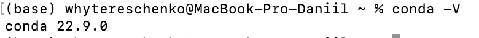
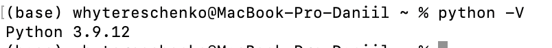
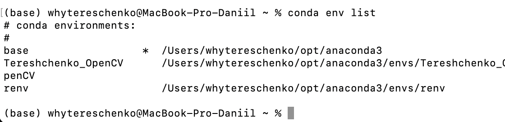
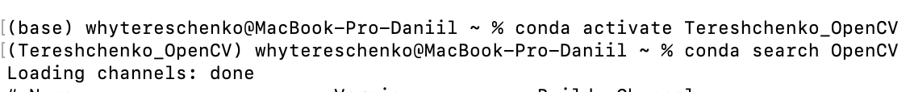
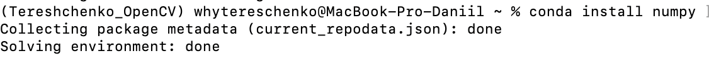
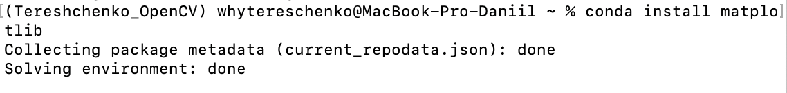
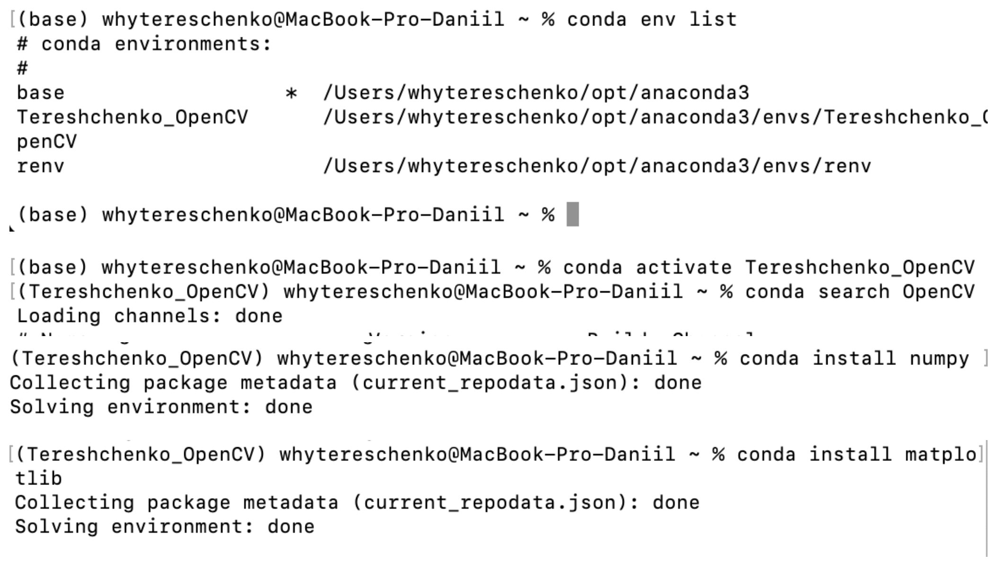
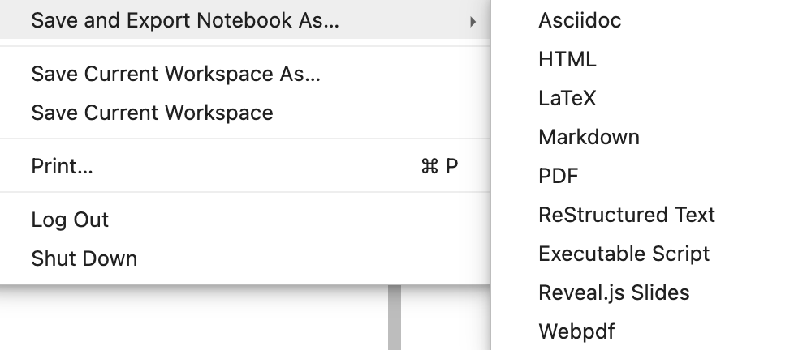

Code
# Імпортуємо пакети
import numpy as np
import cv2 as cv
import matplotlib.pyplot as plt
# import opencv
print('version cv2: %s' % cv.__version__)
# або так
# print(f'version cv2: {cv.__version__}')version cv2: 4.6.0Мета: quick start для роботи з бібліотекою з відкритим кодом для комп’ютерного зору та обробки зображень OpenCV у середовищі Anaconda із застосуванням Jupyter Notebook засобами мови програмування Python.
Попередньо потрібно опрацювати лекцію 7.
“Anaconda – це вільно та відкрито розповсюджуваний (freemium) дистрибутив різних програмних продуктів, зокрема, мов програмування Python та R. Платформа спеціалізується на”наукових обчисленнях” (scientific computing): наука про дані, застосуванні методів машинного навчання, широкомасштабна обробка даних, передбачувальна аналітика тощо. Використання платформи має на меті спрощення управління пакетами та їх розгортання. Версіями пакетів керує система управління пакетами Conda. Дистрибутив Anaconda використовується понад 15 мільйонами користувачів і містить більше 1500 популярних пакетів наукових даних, придатних для Windows, Linux та MacOS, наприклад, NumPy, SciPy та Ggplot2” [1].
Важливою складовою збірки Anaconda є пакет Jupyter, зокрема Jupyter Lab та Jupyter Notebook – вебзастосунки з відкритим кодом, які дозволяють створювати та обмінюватися документами, що містять живий код, рівняння, візуалізацію та текст. Використання включає: очищення та трансформацію даних, чисельне моделювання, статистичне моделювання, візуалізація даних, машинне навчання та багато іншого.
Чому саме збірка Anaconda зі своєю екосистемою буде використовуватися нами як інструмент для обробки зображень?
Тому, в цій лабораторній роботі покроково відпрацьовуються наступні питання:
Anaconda поставляється з набором графічних інструментів під назвою Anaconda Navigator. Ви можете запустити Anaconda Navigator, відкривши його з панелі запуску додатків. Anaconda Navigator дозволяє інсталювати та обновляти пакети, настроювати та управляти віртуальним середовищем тощо. Про Anaconda Navigator детально можна дізнатися тут.
Однак, тут ми розглянемо роботу з Conda через інтерфейс командного рядка, який дозволить краще зрозуміти суть даного інстурменту і роботу з ним.
Перевіряємо версію conda:
conda -V
Аналогічно перевіряємо версію Python:
python -V
Для того, щоб перевірити більш загально інформацію, яка, зокрема включає ввод версій інтерпрета та інформацію стосовно віртуального середовища тощо.
Якщо conda і python встановлені коректно ми маємо побачити їх версії. Пісдя цього необхідно виконати апгрейд середовища за допомогою наступним команд:
conda update conda
conds update anaconda
або за допомогою загальної команди:
conda update --all
В процесі цього програма може запропонувати обновити певні пакети.
Після успішного виконання цих операцій можна перейти до налаштування віртуального середовища, в якому ми будемо встановлювати всі необхідні пакети для роботи з зображеннями.
Слід зазначити, що з консолі можна встановлювати пакети Python двома способами:
* за допомогою менеджера пакетів pip, що входить до складу інсталяції python;
* за допомогою conda.
Слід зазначити, що на відміну від pip, який є менеджером пакетів, conda є програмою більш високого рівня, яка, окрім функцій менеджера пакетів, забезпечує функції управління віртуальним середовищем.
Базова версія Python містить у совєму складі інструмент для створення віртуальних середовищ Virtualenv. Варіант налаштування віртуального середовища за допомогою Virtualenv можна подивитися, наприклад, тут.
Conda включає власний менеджер середовища і дає деякі переваги щодо Virtualenv. Крім того, середовища Conda повністю сумісні з базовими пакетами мови Python, які можуть бути встановлені за допомогою pip.
Тому робота з Conda у цьому плані є більш ефективною. Продемонструєм це на прикладі, налаштувавши віртульне середовище для роботи з OpenCV.
Для того,щоб продивитися перелік доступних віртуальних середовищ можна скористатися командою:
conda env list
Створимо середовище з іменем myenv:
conda create --name myenv
Виконавши повторно команду conda env list, можна впевнитися, чи було створене відповідне середовище. Якщо операція пройшла успішно, можна зробити його активним (активне середвище у списку команди list позначається зірочкою, а напочатку командного рядка його ім’я вказуэться у дужках.
Для активації необхдно виконати наступну команду:
conda activate myenv
Деактивація активного середовища виконується за допомогою команди conda deactivate, або просто deactivate.
У разі виникнення потреби видалити певне віртуальне середовище, необхідно виконати наступну команду:
conda remove --name <ім'я середовища> --all
Тепер у створеному віртуальному середовищи можна встановити необхідні пакети необхідних версій, у тому числі, потрібну версію інтерпретатора Python. Більш детально про це можна подивится, наприклад, тут.
Перелік встановлених пакетів conda можна за допомогою команди
conda list
в результаті чого, на екран буде виведено список пакетів активного середовища.
Пакети встановлюються з репозиторіїв, званих channels by Conda. Щоб виконати пошук певного пакета, запустіть пошук
conda search openCV
Щоби встановити пакет необхідно запустити команду
conda install <package name>
Іноді ви не зможете знайти потрібні вам пакети на базових каналах. Детально про це та нюанси щодо пошуку, оновлення та видалення пакетів можна прочитати, наприклад, тут.
Іноді під час налаштування Python для машинного навчання нам можуть знадобитися чисті пакети Python, які будуть недоступні на каналах Conda. У цьому випадку можна скористатися pip. Наприклад, так ми встановлюємо OpenCV:
pip install opencv-python
Натомість потрібні нам пакети для роботи з матрицями та для математичних обчислееь і візуалізації результатів numpy та matplotlib можна встановити так:
conda install numpy
conda install matplotlib
     
Для подальшої роботи необхідно завантажити Anaconda Navigator і в його середовищі вибрати зі списку доступних віртуальих середовищ потрібне віртуальне середовище (у нашому випадку myenv) і активувати його. Потім створити робочий Notebook-документа, так званий “зошит” ipython, в якому можна завантажити потрібні для роботи бібліотеки і писати код.
Як створити Notebook-документ за допомогою Jupyter Notebook і як з ним працювати можна подивитися тут, тут і тут
# Імпортуємо пакети
import numpy as np
import cv2 as cv
import matplotlib.pyplot as plt
# import opencv
print('version cv2: %s' % cv.__version__)
# або так
# print(f'version cv2: {cv.__version__}')version cv2: 4.6.0# Завантажуємо RGB-зображення та виводимо його характеристики
# 960 × 1306
image = cv.imread('me.png')
# img = cv.imread('rose.png', cv.IMREAD_GRAYSCALE)
# img
print(f'Shape/Dimensions: {image.shape}')
print(f'Number of pixel: {image.size}')Shape/Dimensions: (1306, 960, 3)
Number of pixel: 3761280Робочі посилання: 1,
blue, green, red = cv.split(image) # Split the image into its channels
img_gs = cv.imread('me.png', cv.IMREAD_GRAYSCALE) # Convert image to grayscale
# img_gs = cv.imread('rose.png', 0)
#Візуалізація зображення
cv.imshow('me', me_gs)
cv.waitKey(0)
cv.destroyAllWindows()
# Запис зображення на диск
cv.imwrite('me_s.png', me_gs)# Візцалізація ззасобами matplotlib
import matplotlib.pyplot as plt
import cv2
# Завантажте зображення за допомогою OpenCV
image = cv2.imread('me.png', cv2.IMREAD_GRAYSCALE)
# Перевірте, чи зображення було завантажено успішно
if image is not None:
# Візуалізація зображення за допомогою Matplotlib
plt.imshow(image, cmap='gray') # Встановлення колірної мапи на "сірий" для зображень у відтінках сірого
plt.title('Зображення')
plt.axis('off') # Вимкніть вісі x та y
plt.show()
else:
print('Не вдалося завантажити зображення.')
# Запис зображення на диск за допомогою OpenCV
cv2.imwrite('me_s.png', image)TrueЗавантажити і встановити збірку Python Anaconda.
Через інтерфейс командного рядка налаштувати за допомогою conda віртуальне середовище з ім’ям <StudentLastName>_OpenCV. Етапи роботи підтвердити скріншотами.
Проінсталювати в створене середовище пакети, необхідні для роботи з OpenCV.
Створити Notebook-документ <lab_1_StudentLastName> за допомогою Jupyter Notebook. (Див. тут, тут і тут).
Відобразити в робочому документі (“зошиті” ipython) виконання пунктів 1-3 індивідуального завдання.
Сфотографувати себе на камеру і виконати імпорт і візуалізацію кольорового та напівтонового зображення у робочий документ.
Виконати переведення кольорового зображення у напівтонове і записати його на диск.
Робочий документ оформити у вигляді Notebook-документу (файл .ipynb).
Дати відповіді на контрольні запитання.
Скомпілювати звіт у форматі .html. Для цього необхідно завантажити термінал і у командному рядку запустити наступну команду:
jupyter nbconvert lab_1_StudentLastName.ipynb --to html
lab_1_StudentLastName.ipynb та lab_1_StudentLastName.htmlpip і conda та чим вони відрізняються між собою?Virtualenv?
mathplotlib?import matplotlib.pyplot as plt
import cv2
# Завантажте зображення за допомогою OpenCV
image = cv2.imread('me.png', cv2.IMREAD_GRAYSCALE)
# Перевірте, чи зображення було завантажено успішно
if image is not None:
# Візуалізація зображення за допомогою Matplotlib
plt.imshow(image, cmap='gray') # Встановлення колірної мапи на "сірий" для зображень у відтінках сірого
plt.title('Зображення')
plt.axis('off') # Вимкніть вісі x та y
plt.show()
else:
print('Не вдалося завантажити зображення.')
# Запис зображення на диск за допомогою OpenCV
cv2.imwrite('me_s.png', image)Jupyter Notebook із його середовища , не використовуючи інтерфейс командного рядка? .